アバナード 旭 哲男
2016/mm/dd
前回は、Azureクラウド環境にDockerホストを作成し、WindowsからNginxのDockerコンテナを操作するところまでを解説した。
今回は、分散キーストアであるApache CASSANDRAのDockerコンテナをつかって、より実践的なDockerの使い方を解説する。
Apache Cassandraは、Facebookで開発された、オープンソースのデータベース（分散型キーストア）である。 基本的にはKey-valueのペアを保管・保存するキーストアのシステムであるが、複数のノードにデータを複製する機構をもつことで データ量やアクセス数に応じてノードを追加拡張することで、性能を維持することが可能であり、 ノードに障害が発生しても生き残っているノードがある限りデータの読み書きが可能といった、 障害に対して極めて強い耐性を持つデータベースである。 No SQLの代表格といえるCassandraだが、データを扱うための、CQL(Cassandra Query Language)という SQLライクな言語を提供し、一般的なRDBMSとほぼ同じ使い方ができるのも大きな魅力である。
本記事では、まずは単一のDockerホストにCassandraのコンテナをロードし、別のコンテナからCassandraを 使う手順を説明したのち、Azure Container Serviceを使った複数のDockerホスト上に Cassandraのコンテナをロードする手順を説明する。
前回と同様に、本記事では複数のシェルを使い分ける。記事中以下の表記が出てきたときは、それぞれシェルを使い分けていることに注意。
| 記載例 | シェル | 起動方法 |
|---|---|---|
| PS> | PowerShell | スタート→”PowerShell”を検索→アイコンを右クリックし「管理者として実行」 |
| CMD> | コマンドプロンプト | スタート→”CMD”を検索→クリック |
| SSH> | Putty SSHセッション | PowerShellまたはコマンドプロンプトから”putty”を入力して起動 |
まずは、Dockerコンテナをロードする先のDockerホストを起動する。まだ、Dockerホストを作成していない場合は前回の 記事を参考にDockerホストを作成してほしい。
# Azure-cli を ASMモードに設定する
CMD> azure config mode asm
# Azureにログインする
CMD> azure login
# Dockerホストを起動する
CMD> azure vm start "Dockerホスト名"
つぎに、Dockerホスト上にCassandraコンテナを用意し、Cassandraコンテナをロードする。 DockerホストにPuttyで接続し以下のコマンドを実行する。
# CassandraコンテナのイメージをPULLする
SSH> docker pull Cassandra
# Cassandraを起動する
SSH> docker run -d --name some-cassandra cassandra
# Cassandraが起動したことを確認する
SSH> docker ps
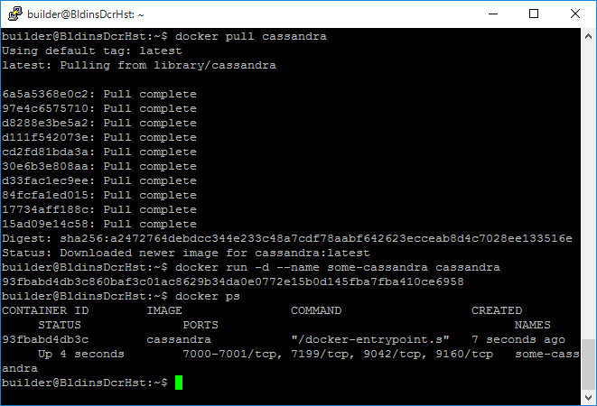
DockerプロセスとしてCassandraが起動したことを確認したら、スキーマの準備とサンプルのテーブルを作成する。
今回は、クライアントとしてcqlshを使用する。
cqlshはCassandraの標準クライアントであり、Cassandraとの対話Shellの機能を提供する。（osqlのようなものと思ってもらえればよい。）
cqlshもDockerコンテナとして用意されており、いままでのDockerコンテナと同じようにDocker runコマンドを使い起動できる。
# cqlshを起動し、Cassandraコンテナに接続する
SSH> docker run -it --link some-cassandra:cassandra --rm cassandra cqlsh cassandra
ここで使用したオプションは以下の通り。いずれもよく使うオプションでありこの後の解説でも登場するので覚えてほしい。
| オプション | 意味 | 説明 |
|---|---|---|
| -it | 標準入力を受け入れる。 | cqlshのように、コンテナ起動後にユーザの何らかの入力を必要とする場合に指定する。 |
| --link | 接続先のコンテナ名を指定する。 | Dockerではコンテナ間通信をする場合、コンテナの名称を指定する必要がある。 |
| --rm | コンテナを起動するときに、既存のコンテナがあれば削除してから起動する。 | Dockerコンテナはコンテナを停止したときに、非活性なコンテナとして残存する(後述)。クライアントのコンテナの場合、何度も起動しなおすことになるためこのオプションを使用することをお勧めする。 |
Cassandraコンテナに接続できたら、helpコマンドを実行しどのようなコマンドが使えるか確認することができる。
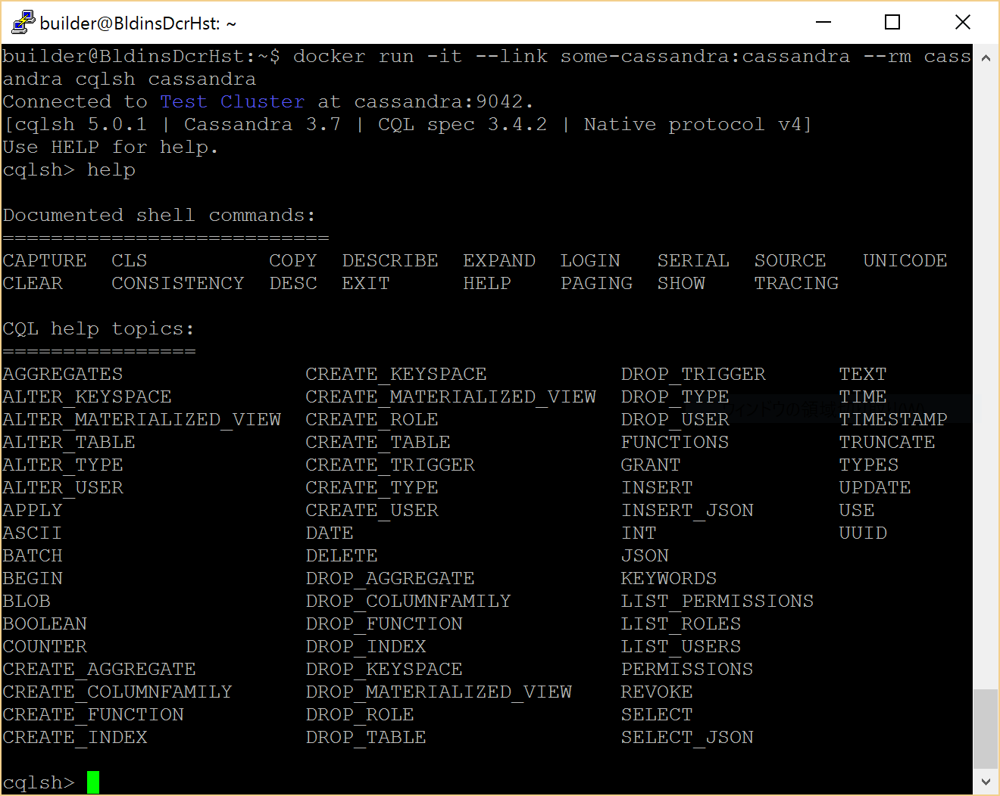
次にCQLを使い、キースペース（データベース）を作成し、テーブルを作成する。CQLの文法の説明についてはここでは割愛する。 CQLについては The Cassandra Query Language (CQL)を参照のこと。
# キースペースの作成
cqlsh> create keyspace mykeyspace with replication = {'class':'SimpleStrategy','replication_factor':1};
# キースペースに移動
cqlsh> use mykeyspace;
# テーブルの作成
cqlsh:mykeyspace> create table posts (
id int primary key,
title varchar,
content text,
created_at timestamp
);
# レコードの追加
cqlsh:mykeyspace> insert into posts (id,title, content, created_at) values (1, 'test', 'test entry.', dateof(now()));
# テーブルの参照
cqlsh:mykeyspace> select * from posts;
# cqlshの終了
cqlsh:mykeyspace> exit
Cassandraコンテナにテーブルを作成し、データを格納できたことを確認できたと思う。 ここでコンテナの関係を整理する。
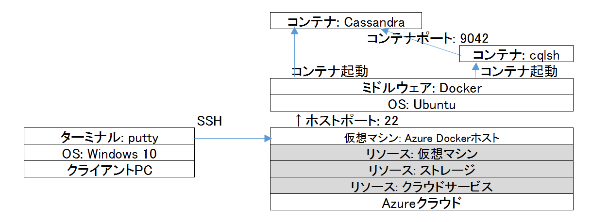
CassandraとCqlshは、Dockerホスト上で起動しているそれぞれ別のコンテナである。 Dockerコンテナ間の通信は、Dockerホスト内の仮想ネットワークで通信が行われる。 DockerコンテナはデフォルトではDockerホストの外から接続できないことに注意。
先ほど起動した、Cassandraコンテナはストレージをマッピングしていない。 Dockerコンテナでの修正はDockerイメージに保存されるが、Dockerコンテナを削除すると 修正内容（今までの例ではキースペースの作成）が失われてしまう。
また、データが将来的に増大したときにリソースを確保でできるように コンテナの外部リソースにデータを永続化（保存）したい。 次に、ストレージをDockerコンテナに割り当てて起動する方法として Dockerホストのストレージをマッピングする方法と、Azureストレージをマッピングする方法を説明する。
ここでは、Dockerホストのストレージをマッピングして起動してみる。 ここではDockerホストのストレージをマッピングするため、すでに起動したCassandraコンテナを停止させ、 コンテナを一度削除してから、再度Cassandraコンテナを起動する。
# Cassandraコンテナを停止する
SSH> docker stop some-cassandra
# Cassandraコンテナが停止されたことを確認する
SSH> docker ps -a
# Cassandraコンテナを削除する
SSH> docker rm some-cassandra
# Cassandraコンテナが削除されたことを確認する
SSH> docker ps -a
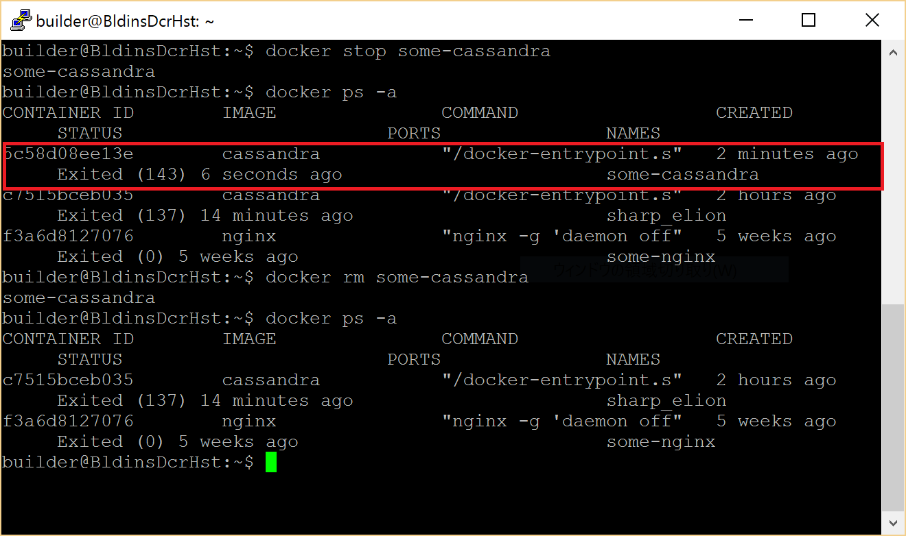
Dockerコンテナを停止させると、STATUSが"EXIT"になるが、Dockerコンテナ自体は残ったままである。（上図の赤枠部分） この状態で、同じ名前のコンテナを作成することはできない。 Dockerコンテナを作成しなおすためには、Dockerコンテナを削除する必要がある。
次にDockerコンテナをDockerホストのストレージをコンテナから使用できるように、オプションを付与して起動する。
# Cassandraに割り当てるディレクトリを用意する
SSH> cd /usr/local/lib
SSH> sudo mkdir cassandra
# ホストの/usr/local/lib/cassandraをコンテナ上の/var/lib/cassandraにマップして起動する
SSH> docker run -d --name some-cassandra -v /usr/local/lib/cassandra:/var/lib/cassandra cassandra
ここで新たに登場したDocker Runのオプションは以下の通り。
| オプション | 意味 | 説明 |
|---|---|---|
| -v | コンテナが使用するストレージを指定する [マップ元のパス]:[マップ先のパス] | 上記の例では、Dockerホストのディレクトリを、Dockerコンテナのディレクトリにマップしている。 |
起動すると、Dockerホストの/usr/local/lib/cassandraにcassandraのデータファイルが生成される。 起動した直後は、データが一切ない状態だが、先に述べたテーブル生成からデータのインサート命令を実施すると そこで登録したデータは、このデータファイルに保存されるようになる。 このデータファイルがあれば、Dockerのインスタンスを削除した後でも同じオプションを使うことで データが保存された状態で起動しなおすことができる。
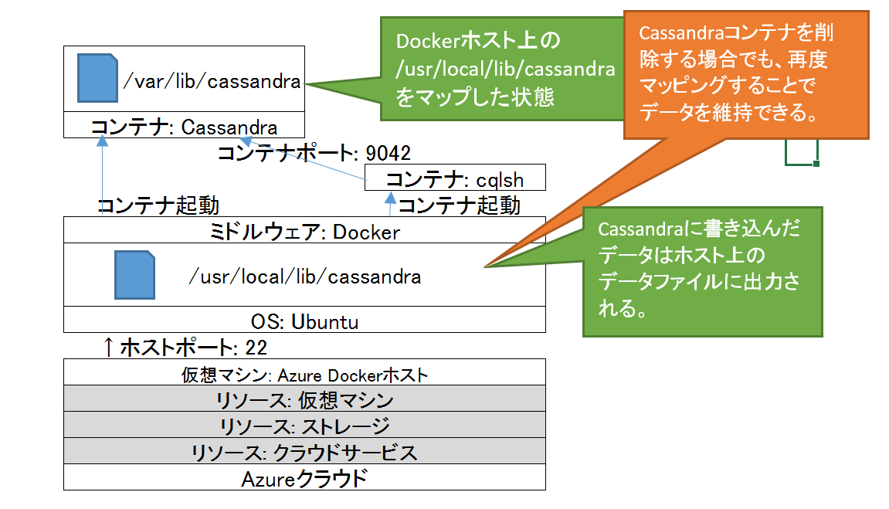
Dockerを停止し、再起動するだけなら Docker stopとDocker restartのコマンドを使うことで実現できる。 この場合、コンテナは削除されていないため、停止した状態を保持した状態で起動される。 データを保持するのであれば、ホスト側のストレージのマッピングは不要に思われるが、 実際には、システム開発の過程ではDockerコンテナのパラメータ修正しながら起動することが多く、 コンテナを削除してから、起動しなおすことが必然として発生するためホスト側のストレージにデータを記録することが望ましい。
Dockerコンテナにストレージをマップするうえで、Dockerホストのストレージを用意する場合、 事前にホスト側に必要なストレージを用意しておかなければならない。 実際に必要なストレージ容量が見積れるのであれば、それに越したことはないが、正確に見積もりできるということはまれである。
容量が見積れないのであれば、もともとの仮想マシンで用意されているストレージではなく、Azure Storageから ストレージを調達して仮想マシンに割り当て、Dockerコンテナに割り当てることができたら便利だろう。
データベースであれば、データ量の増加に伴いストレージをより簡単に増強したいという欲求があるだろうし、 クラウドだからこその利点(大容量、安価、複製が容易、…)があればなおさらである。
Azure Dockerホストでは、Azure Storage上にDockerボリュームを作成使用できるようにする
機能azurefile-dockervolumedriverが用意されており、DockerコマンドからDockerボリュームを構築できるようになっている。
通常LinuxでAzure Storegeを利用する場合、１．Blobの作成、２．仮想マシンへの割り当て、３．ストレージのマウントを それぞれ手作業で実施する必要があり、ある程度Linuxの管理に精通していないと、Dockerボリュームを作成するのは困難である。 azurefile-dockervolumedriverを採用することで、それらの作業を一気に飛ばして、ボリュームを作成・利用できるようになる。 残念ながら本記事の執筆時点では、azurefile-dockervolumedriverはデフォルトではインストールされていないため手動でインストールする必要がある。
まずは、azurefile-dockervolumedriverをインストールする。
# ドライバー及び、設定ファイルをコピーする
SSH> cd /var/tmp
SSH> wget https://github.com/Azure/azurefile-dockervolumedriver/releases/download/v0.5.1/azurefile-dockervolumedriver
SSH> wget https://raw.githubusercontent.com/Azure/azurefile-dockervolumedriver/master/contrib/init/upstart/azurefile-dockervolumedriver.conf
SSH> wget https://raw.githubusercontent.com/Azure/azurefile-dockervolumedriver/master/contrib/init/upstart/azurefile-dockervolumedriver.default
# ドライバーを実行権限を付与し、実行フォルダにコピーする
SSH> chmod +x azurefile-dockervolumedriver
SSH> sudo cp azurefile-dockervolumedriver /usr/bin
# 設定ファイルを構成フォルダにコピーする
SSH> sudo cp azurefile-dockervolumedriver.conf /ect/init
# Azure Storegaアカウント情報を設定する
SSH> sed s/youraccount/[Azure Storegeアカウント名]/ azurefile-dockervolumedriver.default > azurefile-dockervolumedriver.1
SSH> sed s/yourkey/[Azure Storageアカウントキー]/ azurefile-dockervolumedriver.1 > azurefile-dockervolumedriver.2
SSH> sudo cp azurefile-dockervolumedriver.2 /etc/default/azurefile-dockervolumedriver
ここではAzure Storageアカウントを設定するときに、ここではsedを使ったが、Vimが使えるのであればVim等で azurefile-dockervolumedriver.defaultファイルのyouraccount,yourkey を修正してよい。
Azure Storageのアカウント名、アカウントキーはAzureポータルサイトにアクセスし、 次の順番で項目を選択する。 すべてのリソース→[ストレージアカウント名]をクリック→アクセスキー
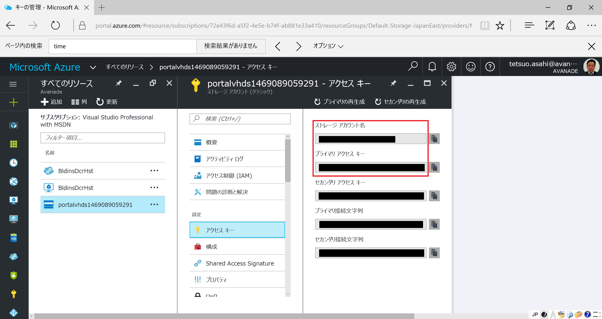
ファイルを配置したのち、ドライバーサービスを起動する。
# 構成ファイルの再読み込み
SSH> sudo initctl reload-configuration
# ドライバーサービスの起動
SSH> sudo initctl start azurefile-dockervolumedriver
ドライバサービスが起動したら、Dockerボリュームを作成してみる。
# Azure Storageを使ってDockerボリュームを作成する
SSH> docker volume create --name myvol -d azurefile -o share=myshare
# Docker Volumeの一覧を確認する
SSH> docker volume ls
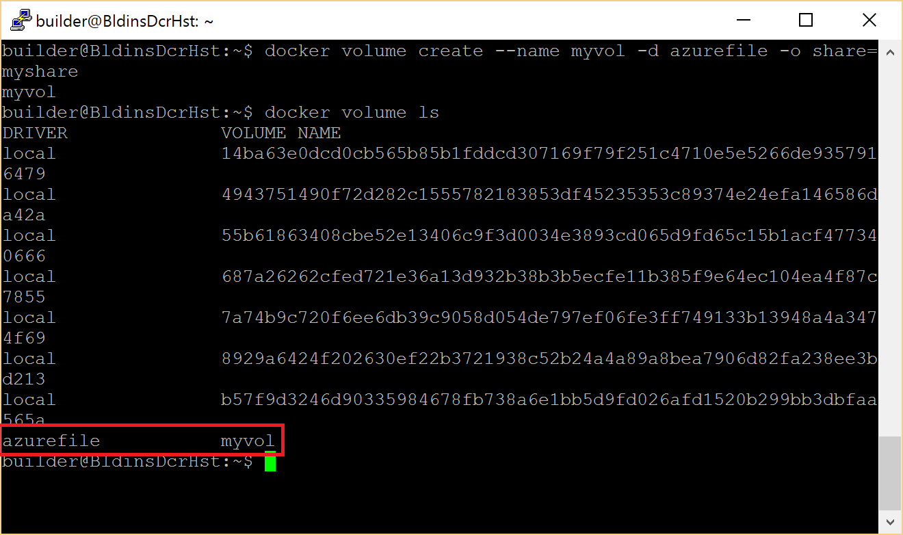
Docker Volume作成のオプションは以下の通り。
| オプション | 意味 | 説明 |
|---|---|---|
| --name | ボリュームの名前 | Dockerコンテナでボリュームをマップするときに使用する名前 |
| -d | Dockerボリュームドライバーを指定 | ここでは、Azure File Storageを使うため auzrefileを指定した。 |
| -o | Dockerボリュームドライバーの追加オプション | このオプション以降はドライバー固有のオプションを指定する。 |
| share=<共有名> | Azure File Storageの共有名を指定 | Azure File Storage上に作成されるボリュームの共有名を指定する。 |
AzurefileとしてDockerボリュームが生成されたことを確認できる。（赤枠内） Azureポータルサイトでは、以下のように選択すると確認できる。 すべてのリソース→[ストレージアカウント名]をクリック→FILEサービス”ファイル”
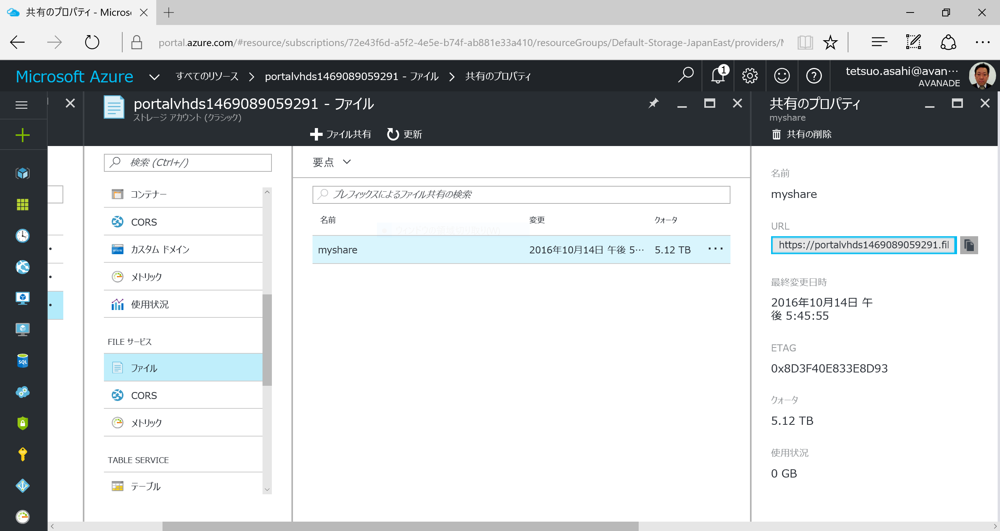
次に、作成したボリュームをCassandraコンテナにマップし起動する。
# Cassandraの停止と削除
SSH> docker stop some-cassandra & docker rm some-cassandra
# Azure StorageのDocker Volumeを使用してCassandraを起動する
SSH> docker run -d --name some-cassandra -v myvol:/var/lib/cassandra cassandra
Cassandraコンテナが起動されれると、myshare内にデータディレクトリが構成される。 先ほど確認した、ファイル共有"myshare"をクリックすると、ディレクトリが構成されていることを確認できる。
コンテナとストレージの関係は以下の通り。
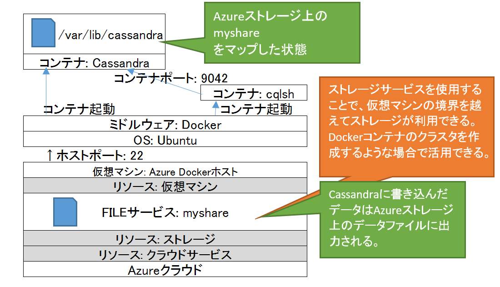
次に、Cassandraコンテナを同一の仮想マシン内で起動し、簡易的なCassandraクラスタを構成する。 Cassandraコンテナをロードする前に、Cassandraコンテナを複数ロードできるように仮想メモリを拡張する。
本記事では、Dockerホスト作成時のデフォルトサイズである”Standard A1(1コア、1.75GBメモリ)”の仮想マシンを使用しており、 複数のCassandraコンテナをロードするために必要純分なメモリを持っていない。 ここでは、実メモリを追加する代わりに、仮想メモリの拡張で複数コンテナのロードを可能にしている。 実際の運用では、あらかじめデータベースの必要とするメモリサイズを見積もり、仮想マシンのサイズ（スペック）を変更する手順となるが、 本記事では、Dockerホストのサイズの見積もりについては言及しない。
# 仮想メモリのスワップ領域（3GB）の作成
SSH> sudo dd if=/dev/zero of=/mnt/swap bs=50MB count=60
# 仮想メモリのセットアップ
SSH> sudo mkswap /mnt/swap
# スワップファイルの有効化
SSH> sudo swapon /mnt/swap
# 利用可能なメモリサイズの確認
SSH> free
つぎに、Cassandraコンテナを起動する。
事前に今まで起動していたCassandraコンテナを、停止(docker stop)と削除(docker rm)をしてから、以下の作業を実施すること。
# Cassandra Node1のロード
SSH> docker run -d --name cassandra-nd1 -v myvol:/var/lib/cassandra -m 1G cassandra
# Cassandra Node2のロード
SSH> docker run -d --name cassandra-nd2 --link cassandra-nd1:cassandra -m 1G cassandra
# Cassandra Node2に接続
SSH> docker run -it --link cassandra-nd2:cassandra --rm cassandra cqlsh cassandra
# mykeyspace.postsを参照
cqlsh>select * from mykeyspace.posts;
ここで新たに登場Docker Runのオプションは以下の通り。
| オプション | 意味 | 説明 |
|---|---|---|
| -m | コンテナが使用するメモリサイズの上限を指定する | 上記の例ではメモリ上限として１GBを指定した。このオプションを指定しないと、Cassandraコンテナが空きメモリを極力確保しようとするため複数コンテナを起動できなくなってしまう。 |
ここでは、Node1にmyvolをマップして起動し、Node2はNode1のクラスタとして参加するようにコンテナを起動した。 Node2はストレージをマップしていないが、Node2に接続してもデータを参照できることを確認できたと思う。
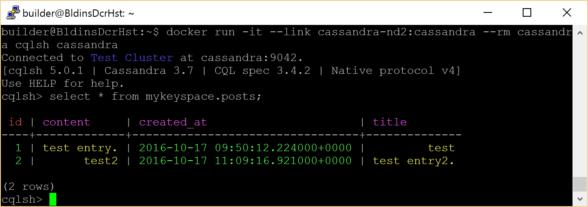
ここではNode1, Node2が同期することを示すために、Node2ではあえてストレージをマップせずに起動した。 実際には、同期された後のデータを格納すべきストレージをマップすることが望ましい。
各コンテナ構成は以下の通り。
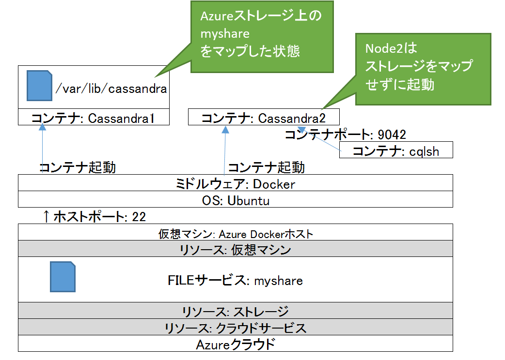
ここまで、単一のDockerホストに複数のコンテナをロードする方法を見てきたが、 ここからは複数のホストに、複数のコンテナをロードする方法を解説する。
通常、Dockerを使ったシステムを開発するうえで、「コンテナをスタック」して開発することが一般的である。 たとえばWebのシステムを開発するとしたら、DB－APPサーバーWebサーバという形態になるだろう、 それぞれの要素はDockerコンテナとして提供され、DBコンテナの上に、APPサーバのコンテナがスタックされ、 さらに、その上にWebサーバがスタックされているようにみなすことができる。
また、スタックを構成するときに、DB-APP-WEBのコンテナをひとつずつ構成するだけではなく、 システムが成長しユーザ数や扱うデータ量が増大したときに、コンテナを追加し負荷分散を図ったり、 その逆に、システムの負荷が下がったら、課金対象となるリソースを削減する目的で、コンテナを削除する 必要があるかもしれない。
Dockerコンテナをスタックするだけであれば、単一のDockerホストだけでも実現することは可能だが、 Dockerホストの仮想マシンのサイズ（スペック）変更を図るだけでは、遅かれ早かれ限界が来てしまう。 システムの高可用性を実現するためには、複数のDockerホストにまたがって、複数のコンテナが お互いが協調して利用（Dockerコンテナのクラスタリング）できることが必要となる。
Azure Container Service(以下ACSと略す)では、
Dockerコンテナのクラスタリングの機構として、
DC/OSとSwarmを選択し利用することができる。
本記事では、いままでのDockerコマンドを使ってコンテナのクラスタを操作できる、Swarmを使い
コンテナのクラスタリング方法について解説する。
Dockerコンテナクラスタを構築するための、大まかな手順は以下の通り。
ACSの配置に当たっては、AzureポータルサイトからACSのテンプレートを選択してサービスをデプロイする方法をとる。 以下順に手順を説明する。
Azureポータルサイトに接続し、「新規」→Marketplaceを検索のテキストボックスに "Azure Container Service"と入力すると、検索結果の一番上に今回使用するACSテンプレートが表示される。
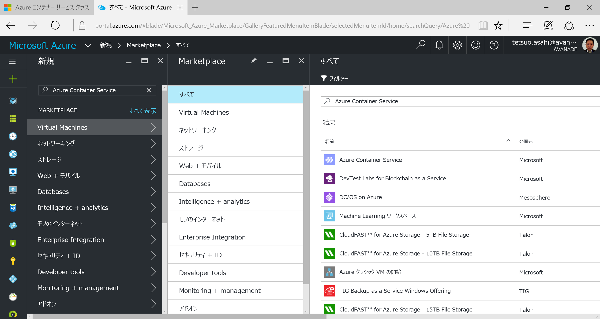
"Azure Container Service"を選択すると、テンプレートの説明が表示されるので「作成」ボタンを押下すると ACS配置のための基本情報を入力する画面が現れるので、それぞれ入力する。
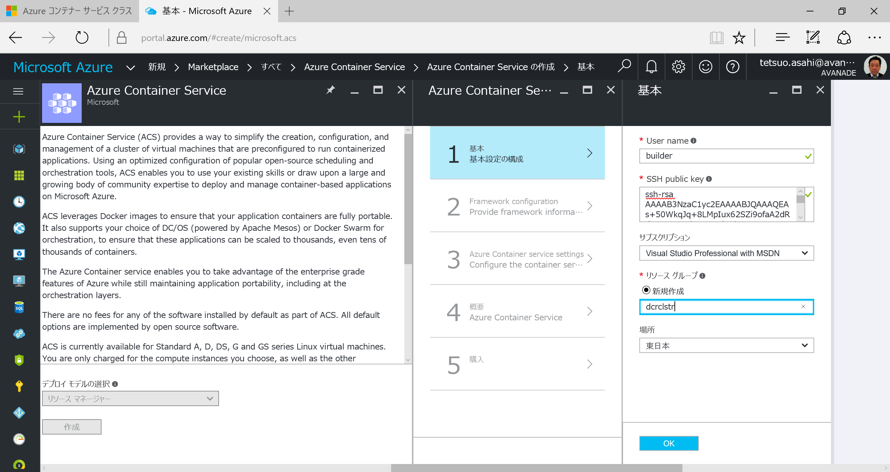
それぞれの項目は以下の通り。
| 項目 | 意味 | 説明 |
|---|---|---|
| User Name | Docker管理ホストの管理アカウント名 | Docker Swarmを使ってDockerコンテナクラスタを構築するときの管理ホストを制御するための管理者アカウント。 |
| SSH public key | SSH認証のための公開鍵の文字列 | Docker管理ホストに接続するための認証公開キー、puttygenを使って公開鍵と秘密鍵を作成し、公開鍵の文字列をここに張り付ける。詳細については、前回記事を参照のこと。 |
| サブスクリプション | Azureの契約種類 | Azureの契約を複数持っている場合には課金対象の契約を選択できる。 |
| リソースグループ | ACSを配置する先のリソースグループ | ACSテンプレートに記載されている各種リソースを配置する先の名前。新規リソース名を指定する |
| 場所 | リソース配置先の地域 | どの地域のクラウドリソースを使用するか指定。 |
今回のACSの配置では、利用されるAzureのリソースは、仮想マシンやストレージのほかに、 可用性セット、仮想マシンのスケールセット、ロードバランサー、仮想ネットワークといったAzureで提供されている各種リソースが同時に配置される。 Azureでは、複数のリソースを一括して配置・管理できるようにAzure Resouce Managerを経由してサービスが提供される。 配置のオペレーションを実施すると、Azure Resource Managerは、配置テンプレートを参照し、使用するリソース定義に従って環境が生成される。 詳細についてはAzure リソース マネージャーの概要を参照のこと。 ちなみに、いままでDockerホストの作成をAzure-cliで行ったときに、asmモードに変更してから操作を行ったが、 実際には、armモードでもDockerホストとして必要なリソースを配置テンプレートとして定義することで配置は可能である。 （ただし配置テンプレートを０から記述するのは困難であり、既存の配置テンプレートを修正して使うのが一般的である。）
テンプレート選択後、Dockerコンテナクラスタ実現のためのオーケストレーション機構を選択する。 先にも述べたように、Dockerコマンドを使って制御できる"Swarm"を採用する。
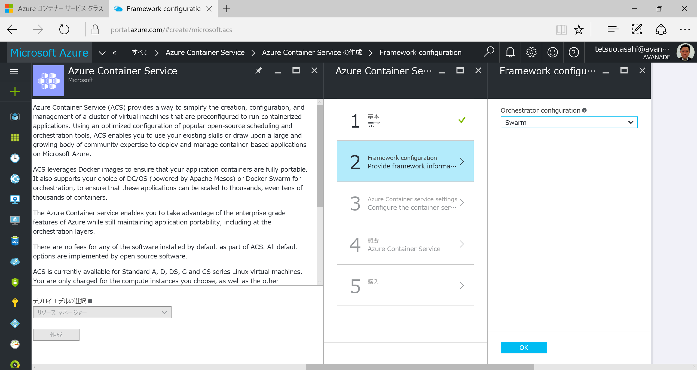
つぎにDockerコンテナクラスタを構成するための、マスターノードとエージェントノード数を指定する。 マスターノードはクライアントからDockerコマンドを受けとり、エージェントノードにDockerコンテナを起動・停止させる役割を持つ。 今回は、ACSの検証のためにマスターノードを1台、エージェントノードを2台の構成とする。
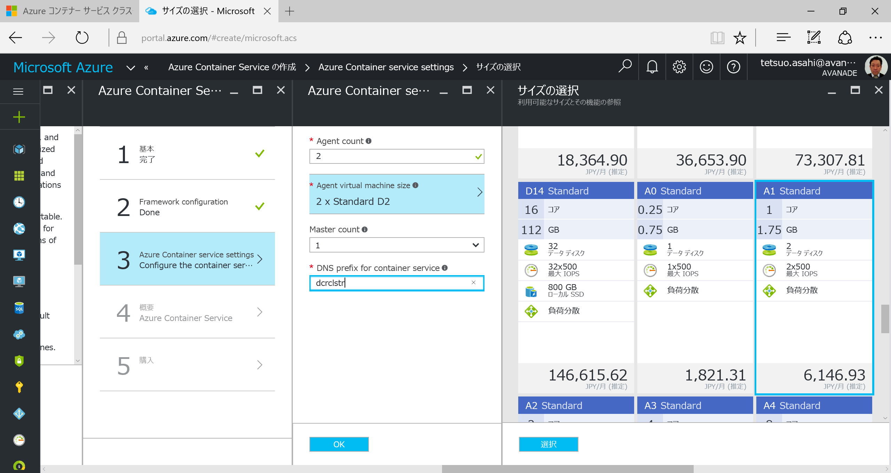
それぞれの項目は以下の通り。
| 項目 | 意味 | 説明 |
|---|---|---|
| Agent count | 配置されるエージェントノードの数 | Dockerコンテナを処理するエージェントの仮想マシンの台数を指定する。 |
| Agent virtual machine size | エージェントノードのサイズ | エージェントノードの仮想マシンのサイズ（スペック）をしていする。 |
| Master count | 配置されるマスターノードの数 | Dockerコンテナを操作するマスターの仮想マシンの台数を指定する。 |
| DNS prefix for container service | Swarmコンテナを使用するときの、接続先名 | DockerクライアントからDockerマスターに接続するための、接続名を指定する。 |
ACSの配置テンプレートの初期値では、エージェントノードは、"Standard D2"が指定されており、 複数のコンテナをロードしても余裕のある構成となっている。 今回は複数のホストで、複数のコンテナに分散してロードされる様子を確認するため、 "Standard A1"にサイズダウンしていることに注意。
「OK」を押下すると構成を確認できる。エージェントノードのサイズや台数は、配置後にAzureポータルサイトの GUIからは操作できないため、ここで確認をすることをお勧めする。

配置後のエージェントノードのサイズ、台数変更はAzure Resource Managerを直接操作する必要がある。 次回記事でエージェントノードのサイズ・台数変更について解説の予定
構成を確認したら、「OK」を押下するとACSの配置が始まる。約30分程度で配置が完了する。 ACSの配置が完了すると、Azure Poralサイトのダッシュボード画面に、新しく作成したリソース（今回の場合は、DCRCLSTR。下図の赤枠部分）が 追加される。
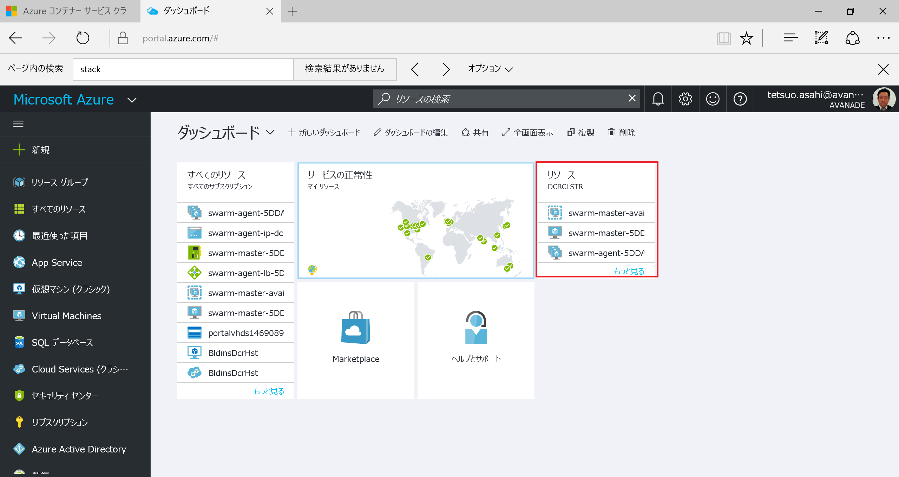
リソースの中身を確認するには、ダッシュボードのリソースを選択するほかに 「リソースグループ」を選択してから、"dcrclstr"を選択することでも確認できる。
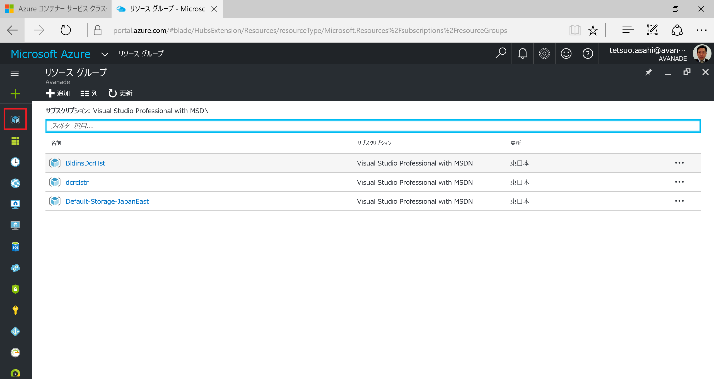
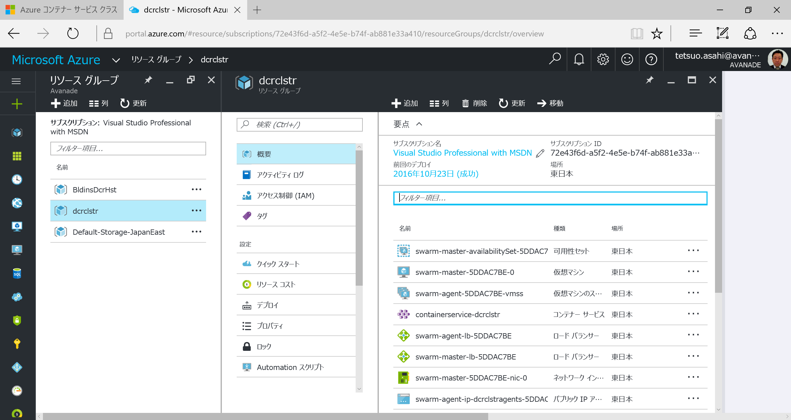
ACS環境に接続してDockerコンテナを操作する前に、Dockerマスターノードに接続するためのSSHトンネリングの設定を行う必要がある。 puttyを起動し、以下の設定を実施する。
| 設定項目 | 設定値 | 説明 |
|---|---|---|
| 接続先ホスト | オーケストレーションの選択で入力した DNS prefix for container service と、リソース配置先の 地域 を指定する。 | |
| ポート | 2200 | SSHで接続するポート番号。"2200"固定 |
| 秘密鍵のパス | マスタノードに接続するための秘密鍵 | リソース配置先の SSH public key で指定した公開鍵に対応する、秘密鍵のファイルパスを指定。 |
| ソースポート | 2375 | Dockerコマンドを受け付けるポート番号。"2375"固定 |
| 接続先 | localhost | SSHトンネリングの接続先ホスト名。"localhost"固定 |
秘密鍵のパスの指定。puttyを起動しSSH-Authタブの"private key file for authentication"を指定する。
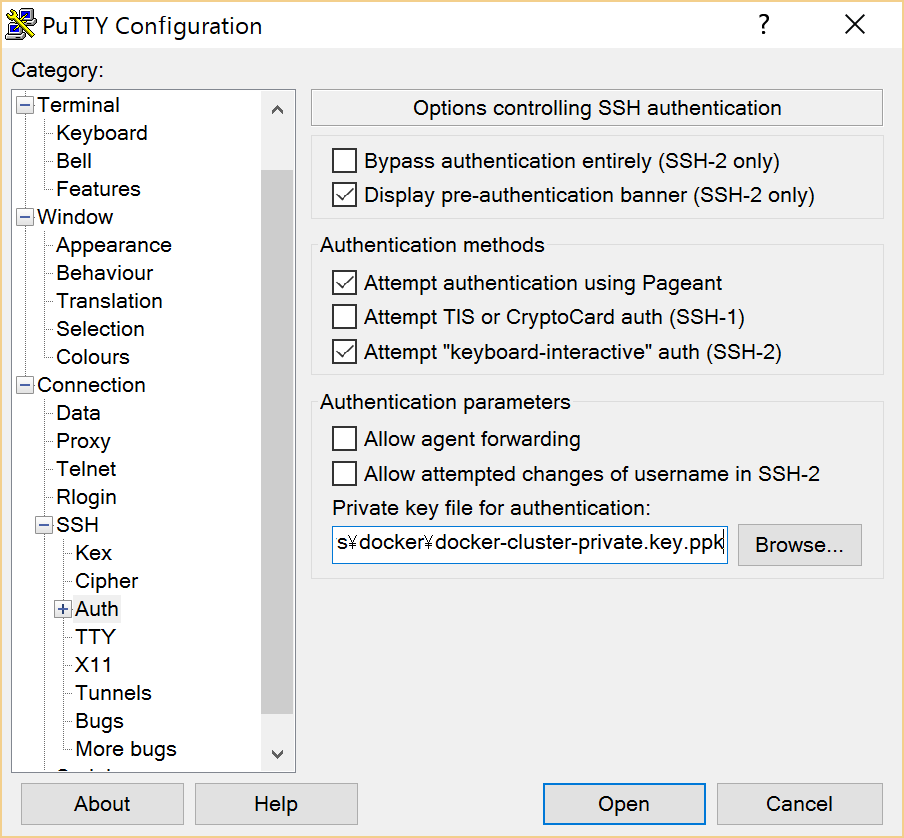
SSHトンネリングの指定。SSH-Tunnelsタブの"Source Port, Destination"を指定し"Add"を押下する。

接続先ホストとポートの指定。Sessionタブの"Host Name,Port"を指定する。 "Saved Sessions"に接続のラベル（以下の例では"docker swarm"）をつけて"Save"を押下する。
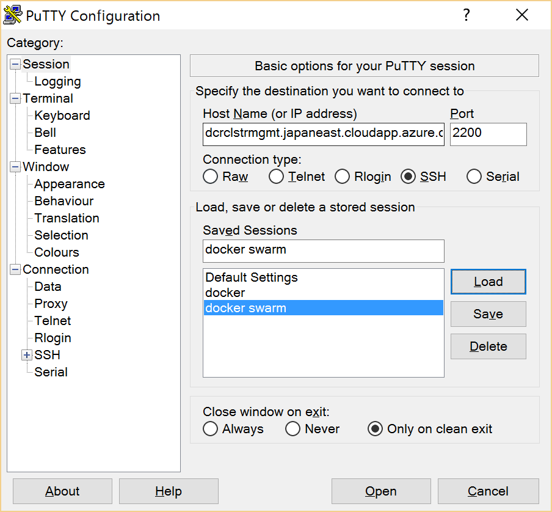
上記の設定を実施したら、"Open"を押下してマスターノードに接続する。
マスターノードに接続したら、docker psコマンドを実行する。 loginユーザは、ACS配置先指定で指定したUser Nameを、パスワードは秘密鍵ファイル作成時に指定したパスワードを指定する。
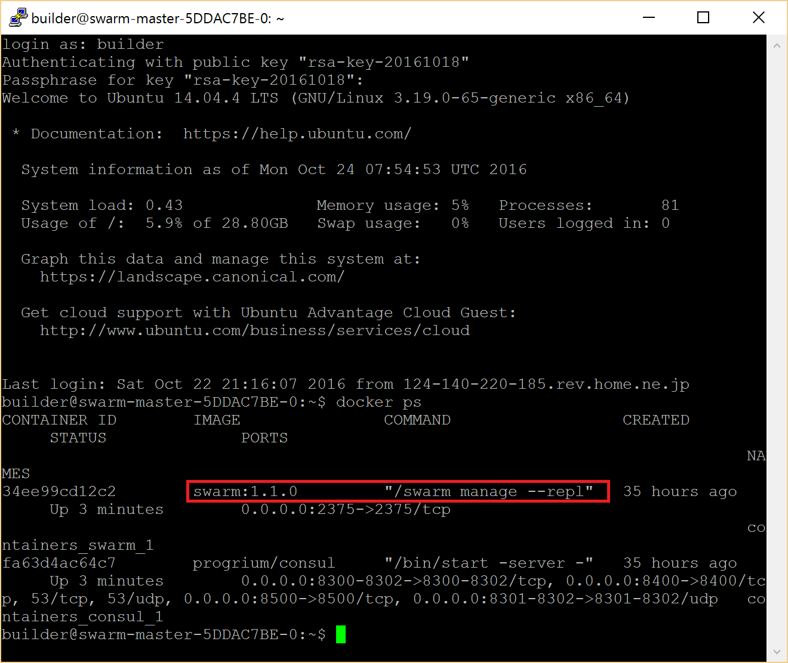
Docker swarmが起動していることを確認できる。(上図、赤枠部分）
次に、クライアントPC側で、Docker infoコマンドを実行する。 実行前に、秘密鍵ファイルをDocker指定のパスにコピーし、環境変数として DOCKER_HOST=:2375を設定すること。 また、Dockerコマンドを実行すると、クライアント-Swarmマスタ間でのSSHトンネリングによりコマンドが送信されるため、 以下の操作はputtyでマスタノードに接続したままで行うこと。
# 秘密鍵をコピーする
CMD> cp <秘密鍵のファイルパス> %USERPROFILE%\.docker\key.pem
# 環境変数 DOCKER_HOSTの設定
CMD> set DOCKER_HOST=:2375
# docker infoの確認
CMD> docker info

Dockerエージェントノードとして2台の仮想マシンが割り当てられていることを確認できる。（上図、赤枠部分）
ACSの配置ができたので、DockerコンテナとしてCassandraコンテナを2つロードする。
今回は、エージェントノード間で通信が必要なため、コンテナのロードに先立ちDockerネットワークをあらかじめ 作成しておく。
# Docker ネットワークの作成
CMD> docker network create --driver overlay --subnet=192.168.0.0/24 overlay-net
# Docker ネットワークの確認
CMD> docker network ls
次に、Cassandraコンテナをロードするが、Cassandraコンテナが相互に接続できないと正しくクラスタを構成できない。 Cassandraコンテナを個別にロードする形でもよいのだが、 ここではdocker-composeの仕掛けを使い、 一度に複数のコンテナを構成しつつロードする方法を採用する。
以下の内容をcassandra-clstr.ymlという名称で保存する。
```YML (cassandra-clstr.yml) version: '2' services: cassandra-1: image: cassandra container_name: cassandra-1 environment: CASSANDRA_BROADCAST_ADDRESS: "cassandra-1" ports:
- 7000
restart: always
cassandra-2: image: cassandra container_name: cassandra-2 environment: CASSANDRA_BROADCAST_ADDRESS: "cassandra-2" CASSANDRA_SEEDS: "cassandra-1" ports:
- 7000
depends_on:
- cassandra-1
restart: always
networks: default: external: name: overlay-net
ファイルを保存したら、以下の手順に従いCassandraコンテナを起動する。
まずは、Docker-compseコマンドをインストールする。
```PowerShell
# docker-composeコマンドのインストール
PS> choco install docker-compose
インストールが終わったらDocker-composeを実行する。 ここでは、C:\workディレクトリにcassandra-clstr.ymlファイルを保存し、docker-composeを実行した。
# docker-composeを使ってCassandraコンテナをロードし、Cassandraクラスタを構成する。
CMD> docker-compose -f cassandra-clustr.yml up -d
# Cassandraクラスタが起動したことを確認する
CMD> docker ps
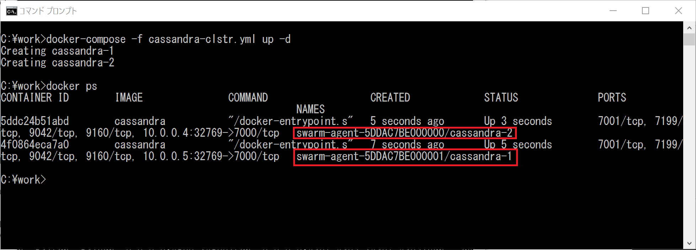
Cassandraクラスタが起動し、それぞれのコンテナが別のエージェントノードで起動される。 上図では、Names列が、[swarm-agent-xxxxxx00001/cassandra-1]のように表記されていることが分かる。 これは、ACS配置時に生成された、Swarmエージェントのホスト名である。
システムの構成は以下の通り。
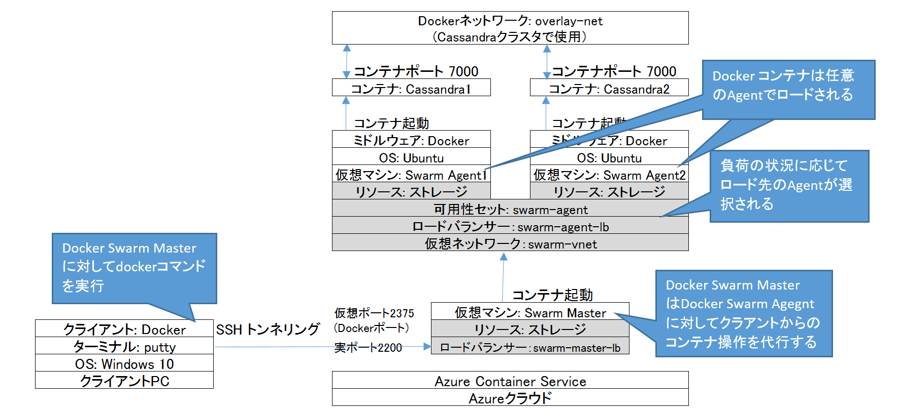
Cassandraコンテナクラスタに接続するにはdocker runを実行する。
先ほど起動したCassandraコンテナのクラスタは、Ovrlay-netという名前で仮想ネットワーク
を構築しているので、--networkオプションを追加して起動する。
# Cassandraクラスタに接続する
CMD> docker run --it --link cassandra-1:cassandra --network overlay-net cassandra cqlsh cassandra
この時点では、Cassandraコンテナにストレージをマップしていないため、中身は空の状態である。 各Cassandraコンテナにストレージをマップする方法は後述する。
次の操作に入る前に、ACSで起動したSwarmマスターとエージェントの停止方法を説明する。
Swarmマスターを停止するには、Azure Potalサイトで今回作成したリソースグループ(本記事ではDCRCLSTR)を、 選択し、swarm-master…仮想マシンを選択してから、"停止"ボタンを押下する。
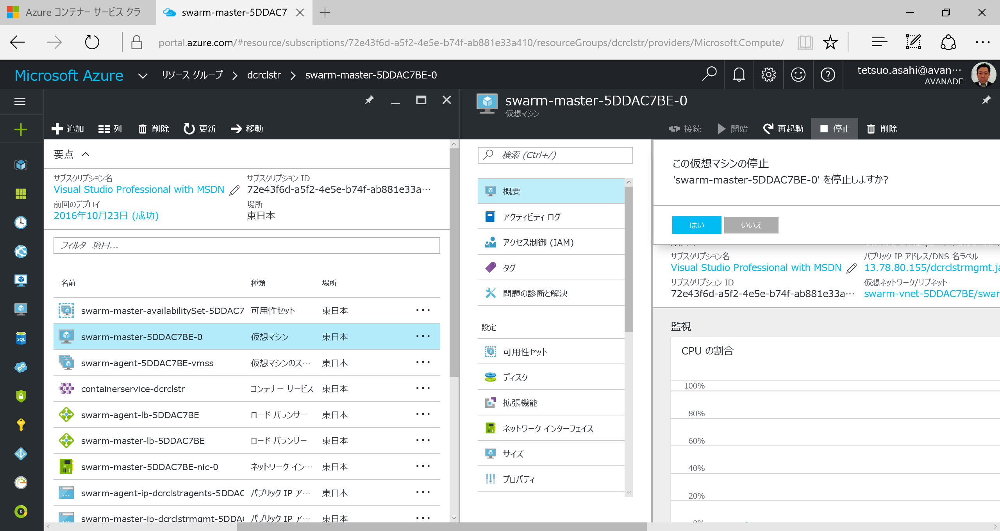
Swarmエージェントを停止するには、同様にリソースグループを選択してから、 swarm-agent…仮想マシンのスケールセットを選択してから、"Deallocate"ボタンを押下する。 複数の仮想マシンがあっても、すべて一括で停止させることが可能である。
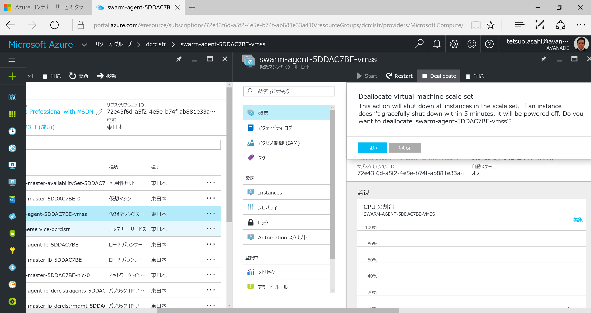
停止させたノードは各画面にある「開始」（または「Start」）ボタンをクリックすることで起動できる。
ちなみに上記と同じ操作を、Azure-cliでも実現できる。 Azure-cliをarmモードに変更し、Azure Resource Managerに対して命令を発行することで各リソースを 操作することが可能である。
# ARMモードに変更
CMD> azure config mode arm
# Swarmマスター(VM)の停止
CMD> azure vm stop <リソースグループ> <仮想マシン名>
# Swarmエージェント(VMSS)の停止
CMD> azure vmss deallocate <リソースグループ> <仮想マシンスケールセット名> <スケールセット内のインスタンスID>
今回の環境であれば以下のように実行する。
CMD> azure config mode arm
CMD> azure vm stop dcrclstr swarm-master-5DDAC7BE-0
CMD> azure vmss deallocate dcrclstr swarm-agent-5DDAC7BE-vmss *
先ほど起動した、Cassandraクラスタの各ノードにストレージをマップして、 Azure Fileストレージにデータを保存できるように構成を変更する。
なお、エージェントノードが十分なストレージを持っているような場合 であれば、以下の作業は不要である。あしからず。
手順は以下の通り
以下手順を説明する。
仮想マシンスケールセット（VMSS）の各ノードにSSHで接続するために、ノードとインターネットを 接続するためのポートを用意する必要がある。
VMSSの各ノードにはPublicIPアドレスが用意されていないため、ノードに直接接続することは できないのだが、ノードとインターネットの間にロードバランサーが配置されているため、 ロードバランサーにSSHポートの負荷分散規則を追加することでインターネットから VMSSのノードに接続することが可能である。具体的には以下の設定を実施する。
Azureポータルサイトにアクセスし、 リソースグループ'dcrclstr'を選択→ ロードバランサー'swarm-agent-lb-xxxxxx'を選択→ 設定'プローブ'を選択→ 「追加」ボタンを押下し、以下の項目を入力してから「保存」ボタンを押下する。
| 項目 | 値 | 説明 |
|---|---|---|
| 名前 | tcpSSH | VMSSノードを監視するためのポート名称。tcp<ポート名>のような名称をつける |
| プロトコル | TCP | 今回はSSHを負荷分散させたいため、TCPを選択する。 |
| ポート | 22 | 監視させるポート番号。SSHのポート番号である22を指定する。 |
| 間隔 | 30 | VMSSノードに対して監視間隔を指定する。 |
| 異常しきい値 | 2 | 監視時にポートからの応答がない場合はエラーとしてカウントされる。ここで指定した回数回エラーが発生したらノードは非活性と判断される。 |
引き続き、ロードバランサーの 設定'負荷分散規則'を選択→ 「追加」ボタンを押下し、以下の項目を入力してから「保存」ボタンを押下する。
| 項目 | 値 | 説明 |
|---|---|---|
| 名前 | LBRuleSSH | 負荷分散のルール名。LBRule<ポート>名のような名称をつける |
| Frontend IP address | swarm-agent-lbFrontEnd-xxxxxx | ロードバランサーに割り当てられているIPアドレスのリソース名。デフォルトのままでよい。 |
| プロトコル | TCP | 負荷分散対象のプロトコル種別を指定する。TCPのままでよい。 |
| ポート | 22 | 負荷分散対象のポートを指定する。今回はSSHのデフォルトポートである22を指定する。 |
| バックエンドポート | 22 | VMSSのノード側のポートを指定する。今回はSSHのデフォルトポートである22を指定する。 |
| バックエンドプール | swarm-agent-pool-xxxxxx | VMSSのプールを指定する。デフォルトのままでよい。 |
| プローブ | tcpSSH (TCP:22) | 先に登録したプローブを選択する。 |
| セッション永続化 | なし | 毎回、異なるノードに接続できるよう、'なし'のままとする。 |
| アイドルタイムアウト | 4 | 接続の維持間隔。デフォルトのままでよい。 |
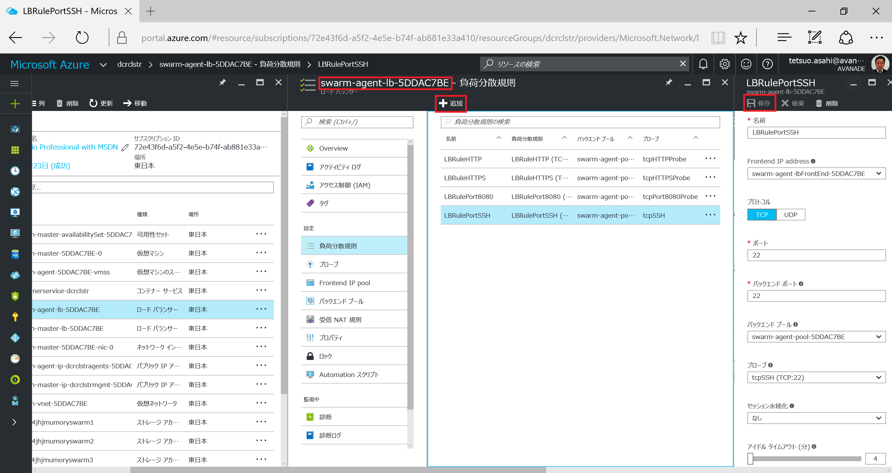
これでVMSSのロードバランサーを経由してVMSSのノードに接続できるようになった。
つぎに、各ノードにSSHで接続しDockerコンテナにAzureストレージをマップするで 行った手順を実施する。
VMSSのノードを起動する必要があるが、ここではセットアップ対象の一つのノードを起動し、 セットアップが完了したらノードを停止し、次のノードを起動するということを繰り返す。
Azureポータルサイトにアクセスし、 リソースグループ'dcrclstr'を選択→ 仮想マシンスケールセット'swarm-agent-xxxxxx-vmss'を選択→ 設定'Instances'を選択→ 仮想マシンの一覧から、任意のVMを一つ選びチェックしてから「Start」ボタンを押下する。
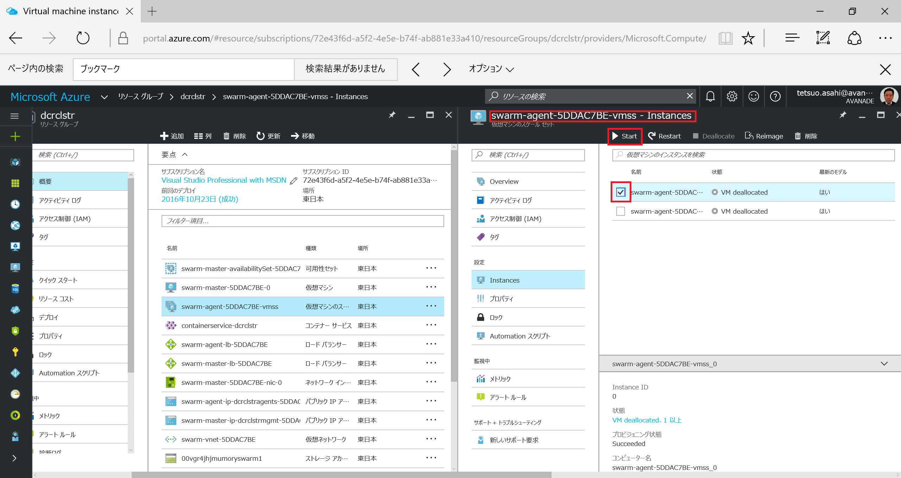
仮想マシンが起動したら、puttyを起動し以下の設定で接続する。
内容は、SSHトンネリング設定とほぼ同じ。 接続先ホストが
mgmt.<地域>.azure.com から
agents.<地域>.azure.comに変わったことに注意。
| 設定項目 | 設定値 | 説明 |
|---|---|---|
| 接続先ホスト | オーケストレーションの選択で入力したDNS prefix for container serviceと、リソース配置先の地域を指定する。 | |
| ポート | 2200 | SSHで接続するポート番号。"2200"固定 |
| 秘密鍵のパス | マスタノードに接続するための秘密鍵 | リソース配置先のSSH public keyで指定した公開鍵に対応する、秘密鍵のファイルパスを指定。 |
| ソースポート | 2375 | Dockerコマンドを受け付けるポート番号。"2375"固定 |
| 接続先 | localhost | SSHトンネリングの接続先ホスト名。"localhost"固定 |
設定が終わったら、'Saved Session'に名前を付けて保存し、「Open」ボタンを押下し接続する。

接続のユーザ名およびパスワードは、先に実施したSSHトンネリングの指定と同じである。 接続すると、SSHのプロンプトにマシン名が表示されている。（下図赤枠内）
あとは、DockerコンテナにAzureストレージをマップすると同じ手順で azurefile-dockervolumedriverをインストールする。
インストールが終わったら、puttyを終了し、Azureポータルサイトで先ほど起動した VMSSのノードを選択してから、「Deallocate」ボタンを押下し、今操作しているVMSSのノードを 停止させる。
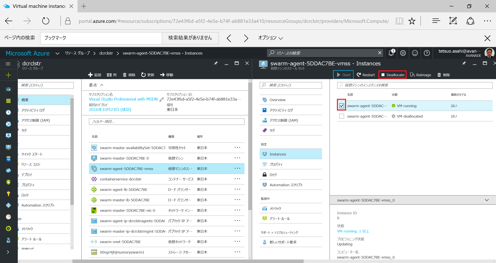
停止したことを確認したら、先ほどと同じ手順で次のVMSSノードを起動し、ドライバーを インストールする。
VMSSの各ノードにドライバーがインストールされたので、CassandraコンテナにAzure Fileストレージを マップするように、Dockerの構成を変更する。
先に保存したcassandra-clstr.ymlを以下のように修正する。
```YML (cassandra-clstr.yml) version: '2' services: cassandra-1: image: cassandra container_name: cassandra-1 environment: CASSANDRA_BROADCAST_ADDRESS: "cassandra-1" ports:
- 7000
volumes:
- "cassandra-vol1:/var/lib/cassandra"
restart: always
cassandra-2: image: cassandra container_name: cassandra-2 environment: CASSANDRA_BROADCAST_ADDRESS: "cassandra-2" CASSANDRA_SEEDS: "cassandra-1" ports:
- 7000
depends_on:
- cassandra-1
volumes:
- "cassandra-vol2:/var/lib/cassandra"
restart: always
volumes: cassandra-vol1: driver: azurefile driver_opts: share: myshare cassandra-vol2: driver: azurefile driver_opts: share: myshare2 networks: default: external: name: overlay-net
この構成では、cassandra-1のコンテナに、cassandra-vol1のボリュームをマップし
cassandra-2のコンテナに、cassandra-vol2のボリュームをマップしている。
また、各ボリュームはコンテナが起動する前に、auzrefileストレージにDockerボリュームが
あるかどうかを確認し、もし存在しなければDockerボリュームを作成してからストレージをマップ、
もし存在すればそのボリュームをマップしてコンテナがロードされるようになる。
動作確認をするため、今まで停止していたswarmマスターと、停止している残りのエージェントを、
先に説明したswarmマスタおよびエージェントのインスタンス画面からそれぞれ起動してほしい。
全ノードが起動したら、SSHトンネリングを開くため、puttyを起動しSwarmマスターに接続する。
次に、以下のコマンドを実行し、Cassandraクラスタを停止させ初期化する。
> すでにSwarmマスタ、エージェントを停止させているので、コンテナが停止された状態になっているが、
> 念のためCassandraコンテナを停止＆削除しておく。
> すでに停止しているコンテナを停止しようとすると、"No Such container: cassandra-1"といったエラーが
> 発生するが、無視しても問題ない。
```CMD
# Cassandraクラスタの停止と削除
CMD> docker stop cassandra-1 cassandra-2
CMD> docker rm cassandra-1 cassandra-2
Cassandraコンテナの停止＆削除をしたのち、Cassandraコンテナを再度起動してみる。
# Cassandraクラスタの起動
CMD> docker-compose -f cassandra-yml up -d
# Cassandraボリュームの一覧
CMD> docker volume ls
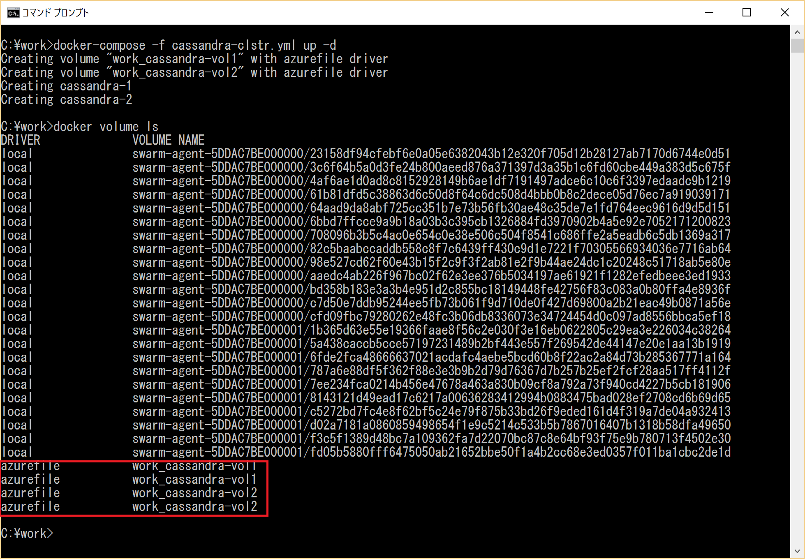
コンテナの起動と合わせて、ボリュームが作成されていることがわかる（上図赤枠内）。 今回の例では、エージェントノードが2つあるため、2つづつボリュームが生成されていることがわかる。
構成は以下の通り。

なお、Cassandraコンテナを停止させる、または停止して削除するには、 以下のコマンドを使用することが可能である。
# Cassandraクラスタの停止（コンテナ削除まではしない）
CMD> docker-compose -f cassandra-yml stop
# Cassandraクラスタの停止と削除
CMD> docker-compose -f cassandra-yml down
Dockerコンテナの基本的な使い方（起動・停止）を一通り解説した。 実運用で必要となる、ストレージのマッピングについても、Dockerホストのストレージをマップし、データを永続化できること。 またストレージとして、Azureファイルストレージを利用できストレージを自由に拡張できることを解説した。
今回は、Cassandraコンテナを使い、コンテナ間が通信する様子を確認し 単一のホストと、複数のホストでCassandraクラスタを構築する方法を解説した。
AzureクラウドでDocker実行環境を整備をする方法については、いったんここで一区切りとしたい。 次回は、Dockerコンテナを自分で構築する・バージョン管理をする・開発環境から検証環境にデプロイするといった 構成管理の面から見たDocker利用の方法を説明する予定である。